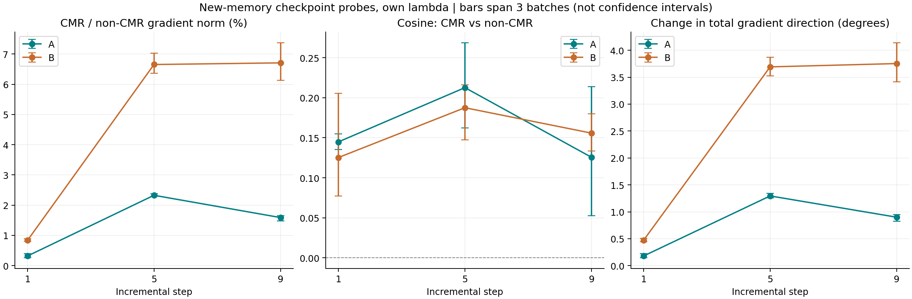
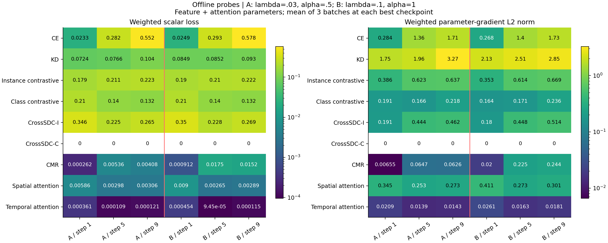
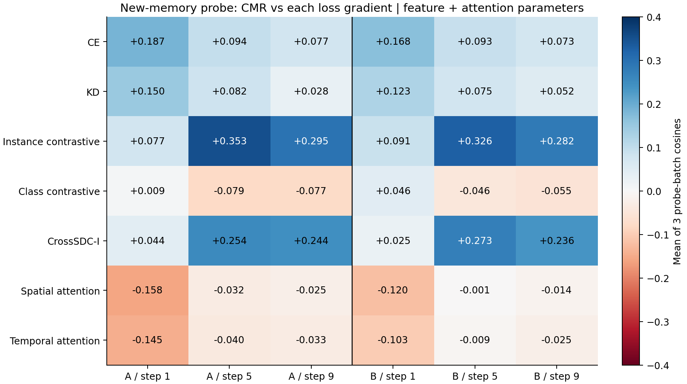

2026-09-30 解释更正：此次 probe 每阶段重新抽取旧类 memory，并重建原型和 Trust；它没有还原原训练的回放样本与 CMR 参照。下列梯度数字只描述这个新构造的离线目标，不能作为原训练梯度尺度的估计。此前据此解释“训练中 CMR 较弱、KD 主导、没有整体冲突”的表述应撤回。19/69 倍差异不能单独支持“原回放的保持效果未泛化”的解释；样本、原型、权重和测量时点的影响尚未分离。原始 CSV 数值保留，历史梯度结论未获验证。
两次运行均完整。A=hinge λ=.03/α=.5，B=hinge λ=.1/α=1；共同 tolerance=.01、训练 seed42。step 1/5/9，每个 checkpoint 3 个 current128+replay128 batch。下述梯度均为 feature_and_attention 参数范围；全模型结果见 CSV。所有结论对应保存的最佳状态和新的固定 train probe，不代表整个训练历史。
样本清单字节内容相同；3 个 metadata 文件、6 份源代码（统一换行符）及两组学生/教师检查点哈希均与本地存档一致。CSV 汇总、加权关系、梯度内积矩阵与合成梯度范数均独立复核。两组最大梯度重构绝对误差约 1.05e-5，相对误差见 audit.json；不是影响结论的量级。参数及 buffer 未改变，optimizer 更新次数为零。本分析只读 CSV/JSON/存档，没有再次前向、反向或训练。
仅在这个新构造的 probe 目标上，CMR 是较小的修正项。A 在 step 1/5/9 的加权梯度相对非 CMR 合计为 .317%/2.327%/1.589%；B 为 .832%/6.655%/6.709%。B 后期已与类别对比项、空间注意力项处于接近量级，但未主导此 probe 的 CE/KD 及其合计。这些比例尚不能外推到原训练。
从 A 到 B，加权 CMR 梯度均值分别放大约 3.06/3.47/3.90 倍，接近但不严格等于 λ 的 3.33 倍。这是两个不同训练状态且 α 不同的比较，不可将差异全部归因于 λ。

| run | step | raw_cmr_loss | weighted_cmr_loss | raw_cmr_grad_norm | weighted_cmr_grad_norm | non_cmr_grad_norm | rho_pct_mean | rho_pct_min | rho_pct_max | cosine_mean | turn_degrees_mean |
|---|---|---|---|---|---|---|---|---|---|---|---|
| A | 1 | 0.0087459 | 0.00026238 | 0.21822 | 0.0065466 | 2.0626 | 0.31682 | 0.25922 | 0.39547 | 0.14487 | 0.17956 |
| A | 5 | 0.17852 | 0.0053557 | 2.1574 | 0.064723 | 2.7833 | 2.3265 | 2.2921 | 2.3814 | 0.2127 | 1.2947 |
| A | 9 | 0.13598 | 0.0040795 | 2.0866 | 0.062599 | 3.9455 | 1.589 | 1.4783 | 1.6566 | 0.12564 | 0.89978 |
| B | 1 | 0.0091212 | 0.00091212 | 0.2001 | 0.02001 | 2.3998 | 0.83237 | 0.79608 | 0.88241 | 0.1253 | 0.47198 |
| B | 5 | 0.17496 | 0.017496 | 2.2464 | 0.22464 | 3.3726 | 6.6548 | 6.3665 | 7.0309 | 0.18759 | 3.6915 |
| B | 9 | 0.15168 | 0.015168 | 2.4395 | 0.24395 | 3.6377 | 6.7093 | 6.13 | 7.3762 | 0.15584 | 3.753 |
在六个 checkpoint probe 中，KD 的加权梯度均为最大项，约 1.75–3.27，且与非 CMR 合计的余弦约 .80–.97。CE 后期约 1.36–1.73；实例对比约 .35–.67；CrossSDC-I 约 .18–.51；空间注意力约 .25–.41；类别对比约 .16–.24；时间注意力约 .014–.026。CrossSDC-C 系数为零，梯度贡献为零，即使其原始 loss 和原始梯度较大。
标量排名不能代替梯度排名。例如 A/step9 的加权 loss：CE=.552、KD=.104、CMR=.00408；对应梯度范数：CE=1.709、KD=3.265、CMR=.0626。KD 标量小于 CE，参数梯度却更大。空间注意力 loss 也很小，但梯度大于 CMR。CMR 对 classifier 的直接梯度为零；全模型与 feature_and_attention 的 CMR 相对尺度接近，当前“小梯度”不是单纯被 classifier 参数范围稀释。

CMR 与非 CMR 合计在这 18 个新 probe batch 中余弦均为正；checkpoint 均值约 .125–.213，说明在这些测量条件下弱同向，不能判断原训练是否存在冲突。它与实例对比及 CrossSDC-I 的后期余弦约 .24–.35，与 CE 为 .07–.19；与 KD 的平均相关较弱。与类别对比在 step5/9 的全部 probe batch 中呈小幅负相关；与空间/时间注意力在 step1 较明显负相关，后期大多接近正交或轻微负相关。负余弦是局部一阶冲突，不等同于性能损害。
把 CMR 加到其余目标后，A 的总梯度方向平均转动 .180°/1.295°/.900°，B 为 .472°/3.692°/3.753°。这些是欧氏参数梯度的瞬时变化，不是 Adam 更新角度，也不代表长期累积效果可以忽略。

| run | step | other_component | cosine_mean | cosine_min | cosine_max | negative_batches |
|---|---|---|---|---|---|---|
| A | 1 | ce | 0.18708 | 0.093823 | 0.26907 | 0 |
| A | 1 | kd | 0.14975 | 0.10128 | 0.18825 | 0 |
| A | 1 | instance_contrastive | 0.077208 | 0.040307 | 0.1457 | 0 |
| A | 1 | class_contrastive | 0.0086933 | 0.0005825 | 0.014447 | 0 |
| A | 1 | cross_sdc_i | 0.043675 | 0.026201 | 0.056146 | 0 |
| A | 1 | attn_spatial | -0.15788 | -0.16866 | -0.15094 | 3 |
| A | 1 | attn_temporal | -0.1451 | -0.16334 | -0.12217 | 3 |
| A | 5 | ce | 0.094435 | 0.0124 | 0.15129 | 0 |
| A | 5 | kd | 0.081875 | 0.062882 | 0.11476 | 0 |
| A | 5 | instance_contrastive | 0.35274 | 0.29754 | 0.39959 | 0 |
| A | 5 | class_contrastive | -0.079211 | -0.097 | -0.045248 | 3 |
| A | 5 | cross_sdc_i | 0.2541 | 0.20127 | 0.32976 | 0 |
| A | 5 | attn_spatial | -0.031524 | -0.074686 | 9.4637e-07 | 2 |
| A | 5 | attn_temporal | -0.039553 | -0.097716 | -0.00095155 | 3 |
| A | 9 | ce | 0.07716 | 0.057453 | 0.11376 | 0 |
| A | 9 | kd | 0.028352 | -0.054288 | 0.10894 | 1 |
| A | 9 | instance_contrastive | 0.29456 | 0.26715 | 0.34434 | 0 |
| A | 9 | class_contrastive | -0.077418 | -0.1009 | -0.058836 | 3 |
| A | 9 | cross_sdc_i | 0.24412 | 0.20122 | 0.2983 | 0 |
| A | 9 | attn_spatial | -0.024735 | -0.03276 | -0.010899 | 3 |
| A | 9 | attn_temporal | -0.033387 | -0.052219 | -0.0039518 | 3 |
| B | 1 | ce | 0.16781 | 0.094238 | 0.22258 | 0 |
| B | 1 | kd | 0.12257 | 0.070829 | 0.22328 | 0 |
| B | 1 | instance_contrastive | 0.090588 | 0.01446 | 0.17542 | 0 |
| B | 1 | class_contrastive | 0.045925 | -0.041874 | 0.094495 | 1 |
| B | 1 | cross_sdc_i | 0.025471 | 0.016545 | 0.043269 | 0 |
| B | 1 | attn_spatial | -0.11961 | -0.18992 | -0.024588 | 3 |
| B | 1 | attn_temporal | -0.1028 | -0.22277 | 0.036927 | 2 |
| B | 5 | ce | 0.092967 | 0.056459 | 0.11927 | 0 |
| B | 5 | kd | 0.075155 | 0.056127 | 0.1128 | 0 |
| B | 5 | instance_contrastive | 0.32631 | 0.30447 | 0.36413 | 0 |
| B | 5 | class_contrastive | -0.045735 | -0.081833 | -0.024477 | 3 |
| B | 5 | cross_sdc_i | 0.27335 | 0.2181 | 0.3448 | 0 |
| B | 5 | attn_spatial | -0.0013129 | -0.016686 | 0.02083 | 2 |
| B | 5 | attn_temporal | -0.0090114 | -0.047643 | 0.032864 | 2 |
| B | 9 | ce | 0.073065 | 0.056996 | 0.086059 | 0 |
| B | 9 | kd | 0.051624 | 0.011527 | 0.10044 | 0 |
| B | 9 | instance_contrastive | 0.28198 | 0.25909 | 0.30606 | 0 |
| B | 9 | class_contrastive | -0.054919 | -0.087933 | -0.030583 | 3 |
| B | 9 | cross_sdc_i | 0.23631 | 0.20095 | 0.30562 | 0 |
| B | 9 | attn_spatial | -0.014244 | -0.025223 | 0.002519 | 2 |
| B | 9 | attn_temporal | -0.024926 | -0.045022 | -0.002406 | 3 |
新的 memory 每阶段覆盖全部旧类，但不保证等于原 replay memory。A/step9 的加权 CMR，训练最佳 epoch 的 batch 均值约 .000214，probe 为 .00408（约 19.1 倍）；B/step9 对应 .000219 与 .01517（约 69.4 倍）。CrossSDC-I 和总 loss 也存在差异。训练数字是 epoch 内、不断变化的参数及原 batch 下的平均；probe 是最佳 checkpoint 下的新 batch、新 memory 和重建 Trust。不能将这些比值直接命名为过拟合程度，也不能将 probe 梯度当作当年训练末期的梯度。
去掉全局 lambda 后，step9 的原训练最佳 epoch 中 raw CMR 为 A=.00713、B=.00219；新 probe 为 A=.13598、B=.15168。这里的 raw 仅去掉全局 lambda，仍含 Trust 加权。由于回放样本及 CMR 参照一并变化，这个次序变化不能解释为保持能力的泛化变差。首先需要验证离线过程能复现原训练目标，而非先作泛化归因。
原训练在每阶段只为刚变成旧类的 10 个类别抽样，已有类别保留旧列表的前 k 个；k=500/(10×step) 的向下取整。随机流从训练 seed42 延续，候选按 metadata 原顺序排列。新 probe 则每个被测阶段重新创建 random.Random(42+step×100003)，将候选 ID 排序后，为全部旧类重新抽取 k 个。相同 seed 数字不等于相同 memory。
step1/5/9 分别使用 500/500/450 个新抽的 memory 样本，每类 50/10/5 个。各 batch 独立从当前新类 train 池抽 128 个、从新 memory 抽 128 个；batch 内不重复，跨 batch 可重复。step9 的 3 批共覆盖 291 个不同旧样本。两组实验的 manifest 相同，但它们都没有验证为原训练 memory。CMR 仅计算旧样本，原型和 Trust 用全部 memory 构建，不是只用 128 个 batch 样本构建。
step9 每类仅 5 个原型样本，正类原型还会排除当前样本，故只剩 4 个。换 memory 同时改变被测样本、正负类原型、教师参考 margin 和 Trust。hinge 的零阈值还使原均值非常接近零时出现很大的倍率。它们是能够造成系统差异的机制，现有输出不能定量分离各自贡献。
下表核对全部 3 个 probe batch 以及最佳 epoch 前后各 5 个 epoch 的原训练均值。step9 的每个 probe batch 都远高于原记录，且附近 11 个 epoch 的原记录持续很低，不能只用 batch 数少或挑中了一个异常低 epoch 来解释。
| run | step | train_best_epoch_weighted_cmr | train_neighbor_min | train_neighbor_max | probe_batch_1_weighted_cmr | probe_batch_2_weighted_cmr | probe_batch_3_weighted_cmr |
|---|---|---|---|---|---|---|---|
| A | 1 | 6.5887e-05 | 3.8659e-05 | 8.6383e-05 | 0.00020831 | 0.00031856 | 0.00026026 |
| A | 5 | 0.0003254 | 0.00026199 | 0.00044102 | 0.0048355 | 0.0062039 | 0.0050279 |
| A | 9 | 0.00021391 | 0.00017398 | 0.00026827 | 0.0041537 | 0.0040716 | 0.0040132 |
| B | 1 | 0.00010469 | 4.8581e-05 | 0.00011782 | 0.00084922 | 0.0010879 | 0.00079928 |
| B | 5 | 0.00014342 | 0.00013555 | 0.00026175 | 0.015732 | 0.019316 | 0.01744 |
| B | 9 | 0.00021863 | 0.00014886 | 0.00027207 | 0.015045 | 0.014236 | 0.016224 |
| run | step | best_epoch | test_accuracy_pct | train_epoch_mean_loss | probe_total_loss | train_epoch_mean_weighted_cmr | probe_weighted_cmr | probe_over_train_cmr | train_epoch_mean_weighted_cross_sdc | probe_weighted_cross_sdc |
|---|---|---|---|---|---|---|---|---|---|---|
| A | 1 | 194 | 65.2 | 0.60577 | 0.83718 | 6.5887e-05 | 0.00026238 | 3.9823 | 0.28597 | 0.34555 |
| A | 5 | 172 | 54.4 | 0.24588 | 0.94275 | 0.0003254 | 0.0053557 | 16.459 | 0.010306 | 0.22476 |
| A | 9 | 186 | 39.9 | 0.23585 | 1.2842 | 0.00021391 | 0.0040795 | 19.071 | 0.0079673 | 0.26549 |
| B | 1 | 165 | 66.1 | 0.64657 | 0.86983 | 0.00010469 | 0.00091212 | 8.7126 | 0.29464 | 0.35018 |
| B | 5 | 190 | 53.333 | 0.2339 | 0.97707 | 0.00014342 | 0.017496 | 122 | 0.0095867 | 0.22807 |
| B | 9 | 189 | 38.98 | 0.2294 | 1.3124 | 0.00021863 | 0.015168 | 69.378 | 0.0071941 | 0.26908 |
原训练 CSV 中的标量、原测试准确率仍有效；新 probe 的梯度、夹角与 λ 的瞬时缩放关系只在新 probe 条件下成立。当前数据没有回答“实际训练中 λ=.03/.1 分别有多强”的核心问题，也不能据此推荐调整 λ。A/B 的 λ 与 α 同时变化，教师也各自不同，不能作单参数因果比较。
不需要重复训练。下一步应先按原代码的逐阶段抽样、metadata 顺序、feature 可用性及随机流尝试重建原 memory，并用存档的 static_trust 和 epoch weights 核验；只凭 seed 不能宣称已恢复成功。再在保存的学生/教师 checkpoint 上，以原 memory、原型、权重和 batch size 先做便宜的标量对齐检查，对齐后才计算梯度。即使完成，也只解释保存状态附近的原目标梯度，不能恢复没有保存的每个训练时刻。当前分析没有执行新的模型推理或反向计算。
只有一个训练 seed，且 3 个 probe batch 存在样本重叠；图中范围表示 batch 波动，不是置信区间。实验自己的教师与重建权重也随实验而变。运行记录中的原始梯度和夹角已经足以离线推导同一 checkpoint 下其他 λ 的瞬时总梯度，但不能推导另一 λ 训练完成后的结果。
文件：cmr_summary.csv、loss_gradient_summary.csv、cmr_pairwise_summary.csv、training_probe_comparison.csv、probe_coverage.csv、discrepancy_audit.csv、audit.json。analyze_returned_probes.py 可复现本报告；原输入未修改。